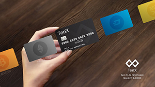
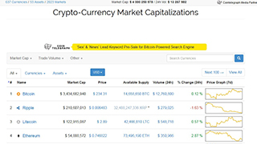

|  |  | |
Was ist Bitcoin? |
TenX - Bezahlen mit Kryptowährungen |
Coinmarketcap - so stehen die Kurse |
|
Bitcoin (kurz: BTC) ist eine digitale Währung, die elektronisch geschaffen (gemined) und verwahrt wird. Anders als der Euro oder der Dollar werden Bitcoins nicht physisch gedruckt respektive von Zentralbanken erzeugt, sondern dezentral von vielen Menschen rund um den Globus mit Computerpower errechnet... weiterlesen |
Die Geschichte beginnt in Bangkok und endet vorläufig in Singapur: 2014 treffen die Österreicher Toby Hönisch, Michael Sperk und Julian Hosp sowie der Thailänder Paul Kitti zufällig in der thailändischen Metropople aufeinander und erkennen die gemeinsame Leidenschaft für Krypto-Währungen wie Bitcoin. Sprung ins Jahr 2017: Ende Juni nehmen die vier mit ihrem nunmehrigen gemeinsamen Startup TenX mit Sitz in Singapur umgerechnet 80 Millionen Dollar in einem so genannten Token Sale ein. Ein neuer Stern am Himmel der Blockchain-Startups ist geboren... weiterlesen |
Auf coinmarketcap.com haben Sie Zugriff auf die aktuellen Kurse von Bitcoin, Ethereum & Co. Außerdem stehen Ihnen detaillierte Informationen zu sämtlichen Kryptowährungen wie
weiterlesen |